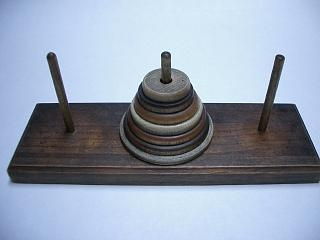
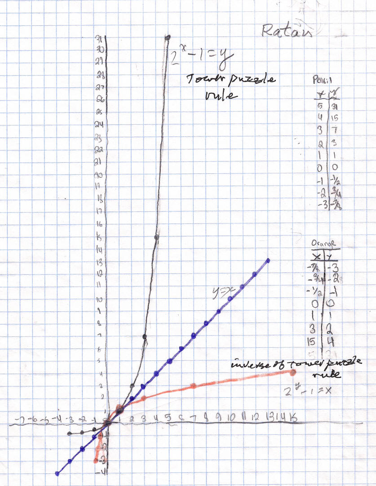

To find the equation for the inverse of the Tower Puzzle rule - Explanation
By: Ratan & Don
We played with the Tower Puzzle.
The object and rules are: The object is to move the tower of discs from one peg to another. The rules are: you can't put a bigger disc on top of a smaller one, you can only move one disc at a time, and later you will need to move the discs in the minimum # of moves. The table and graph show the # of discs vs the minimum # of moves.


The function that we found for the tower puzzle rule was 2x - 1 = y.
We
found the the graph of the inverse by switching the x and y-coordinates. So the
point
(2,3) on the original graph (black), will go to (3,2) on the orange graph- the
inverse-whose equation was
2y - 1 = x
Notice also that
the y=x line is the line of symmetry of the 2 graphs. [Don noticed on
Ratan's graph that between 0 and 1 the orange graph shows up, but the black does
not, and is covered by the blue-it got unnoticed by both of us.].
So to solve for
y we first had to figure
how to use logs, because y was an exponent. We first
figured out that that
the log23 = 3*log2 which we then found out equals the log of 8. This means that
the identity is log AB equals B*log A. Then we combined this with our
skills of simplifying equations to solve the problem. So we tried to find an
equation with y in terms of x But then we realized a problem with
the equation it was solving for x instead of y. So we the following:
Work (simplified equation)
2y
- 1 = x
Add 1 to both sides of the equation to get
2y
= x + 1
Then take the log of both sides, to get
log 2y = log (x+1)
Using the identity above, the log 2y= y* log2
So y* log 2 = log (x+1),
So we get the equation of the inverse,
y = log(x+1)/log2
[Ratan made a second mistake when he wrote to Don and said there was a second equation for the inverse. He had 2y=x+1, (2y instead of 2y) then divided both sides by 2 and got y=.5x+.5 which is a linear equation and couldn't be right. Don wrote an email to Ratan about this error].
To check our work, if we put 3 in for x, we should get 2 for y
then y = log(3+1)/log2= log(4)/log2 = .602/.301= 2 it works!
FINE WORK RATAN !!